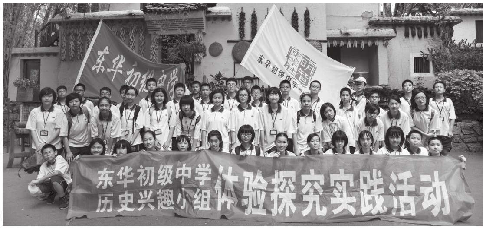
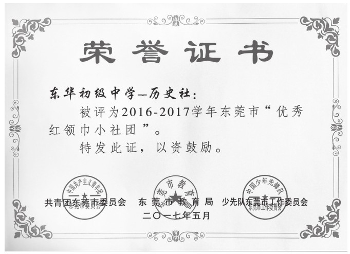

所谓核心竞争力，在当代企业管理中，一般指那些可以为企业带来比较竞争优势的优质资源，以及这些资源的配置方式和整合方式等。核心竞争力的识别标准一般有价值性、稀缺性、不可替代性、难以模仿性等四种基本特征。它使企业能够长期获得竞争优势的能力，并且是具有竞争对手难以模仿的技术或能力。
学校管理其实就是企业管理，就是对人力资源的整合、重组和管理。学校的核心竞争力是什么？有人说，是师资。的确，卓越的师资队伍是提升学校口碑和质量的保证。但在现代社会中，人才流动是一种常态，且优秀师资队伍的稳定还受到工资福利、地域环境等外部因素影响。有人说，是成绩。中高考成绩、升学率等硬指标，的确能迅速提高一个学校的知名度。但影响学生成绩的因素也很多，比如生源，比如政策，比如师资……在核心素养背景下，伴随着新一轮的中高考改革，以及学校布局的重组与调整、教育资源的优化与均衡配置，很多学校将失去原来赖以鹤立鸡群的地域、生源等竞争优势。那么学校要继续发展壮大，品质提升靠什么？是靠不断更新升级的现代化硬件设施？或是靠部分名校学生的广告效应？还是靠学校内涵发展，走高品位文化发展之路？其实，无论哪所学校，不管她以什么名称和标志去建构自己的理念、品牌或特色，其核心表现都是课程。选择学校意味着选择课程，选择课程意味着选择了未来。
我认为，优质且具特色的学校课程，即我们通常所讲的校本课程，才是学校的核心竞争力。科学合理、丰富多彩、指向素养、着眼未来的校本课程开发与应用，就是为学校提供了知名度、美誉度、竞争力，就是为教师提供专业发展的广阔平台，就是为学生的多元发展和素养提升提供无限可能，就是为师生提供展示和锻炼个性特长的重要舞台。
一、校本课程应该是国家课程和地方课程的延伸和补充
在新课程体系下，国家课程、地方课程、学校课程本来就是三位一体的课程内容，校本课程应该基于国家《课程标准》进行开发，因地制宜、因时制宜地将国家和地方课程落地，增强课程对学校及师生的适应性。校本课程不能脱离、更不能背离国家课程方向进行乱开发、胡设计。
二、校本课程应该是学校教育教学资源的最大化应用
学校的每一位教师都是校本课程的开发者和实践者，这就要求学校行政部门要充分调动老师的课程开发积极性，充分发现和肯定老师的特长爱好、兴趣热情等。甚至，学生也可以参与到课程的开发之中，充分发挥部分优秀学生的特长，通过开设学生社团或者是校园明星讲座等方式进行。同时，学校的每一段历史、每一处建筑、每一块场地都是课程，都可以开发成特色的意义课程。
三、校本课程应该是家校共育的有效手段，是社会资源对学校教育的有效补充
面对现在复杂的学生群体，对家庭教育进行恰当适时的指导，是学校的社会责任，创办家长学校、开设家长课堂、提升家庭教育的品质，是实现家校共育的重要前提。家校共育，一方面是学校教育与家庭教育的共同提升，另一方面是家校合力、共育英才。充分利用家长群体里的优质资源，开设校本课程，让家校共育开出灿烂之花。从事金融工作的家长，可以开设金融课堂；从事科研工作的家长，可以开设学术课堂；从事警察、律师、法官等工作的家长，可以开设法治课堂等。同时，还可以依托社区，有条件地引入一些社会资源进校，开设多彩课堂，让墙外的教学资源在墙内绽放。总之，充分利用可以利用的一切积极资源，为学校课程所用，让课程走向社会，把社会融入课程。

作者带领学生开展项目式学习和课程实践
四、校本课程应该成就一批课程专家，形成一批课程成果，福泽一批优秀学子
以学生需要为主要指向的，以教师自主开发为操作手段的，以学校特色发展为个性平台的校本课程建设，需要有体系、有标准、有教程、有评价、有传承。经过时间和实践沉淀下来，并得到不断完善的优质课程，将是学校的课程名片；在课程开发与建设中，逐步凸显出的教学名师，将是学校的课程专家；当一个学校拥有一批课程专家、一系列优质课程、一套完善的课程评价体系，那么，学校的核心竞争力就将逐步彰显，并将在同行业中形成竞争优势和引领作用。

校本社团获上级部门嘉奖
我自己也长期承担校本课程的开发工作，创建了“明智史学社”，带领学生写身边的历史、做历史手工、演历史话剧、搞历史辩论、访历史遗迹（名人），该史学社于2017年被共青团东莞市委员会、东莞市教育局、少先队东莞市工作委员会联合授予“优秀红领巾小社团”荣誉称号。我长期开设的“千古红颜万古情——走近古今中外的绝色佳人”系列讲座，学生选修人数年年爆满、一位难求。由该课程的系列教案整理而成的书稿《红颜长歌——影响中国历史的女性》，已经于2020年10月由九州出版社出版。